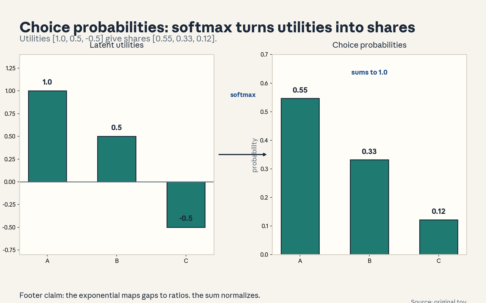
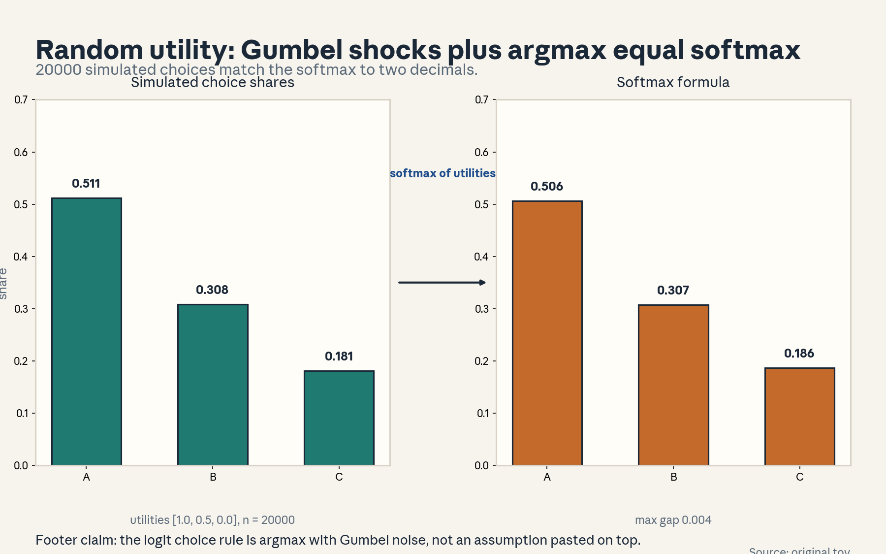
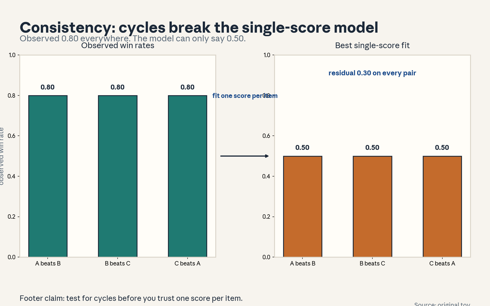
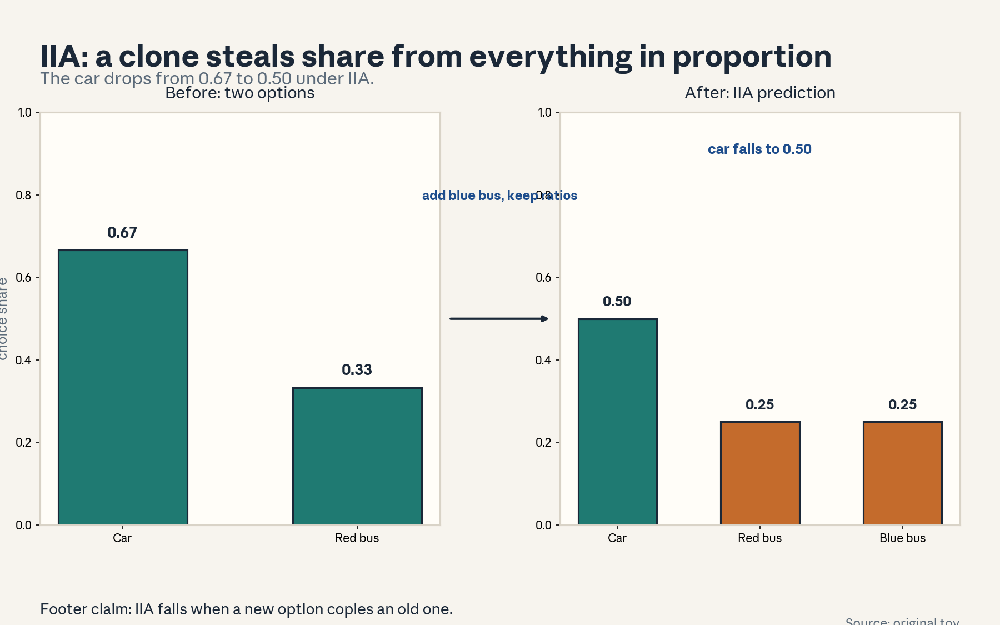
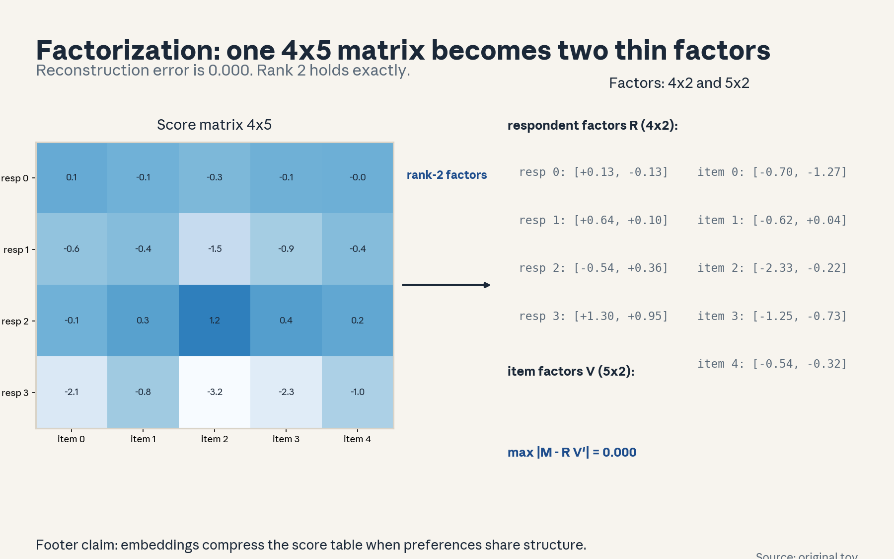
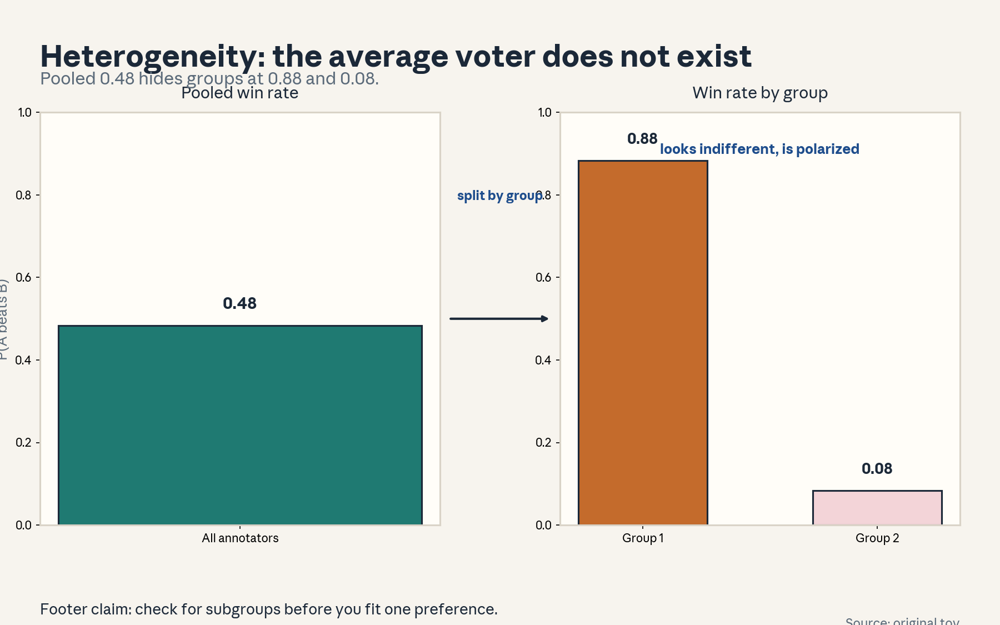
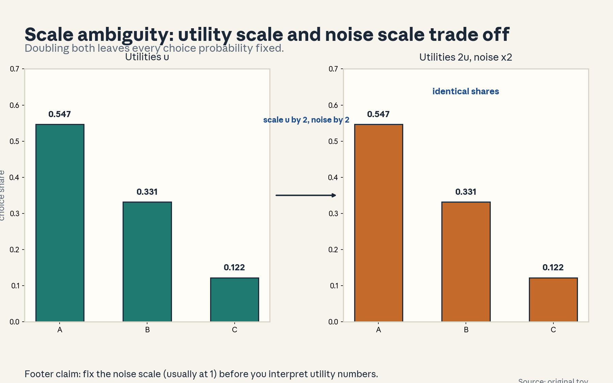
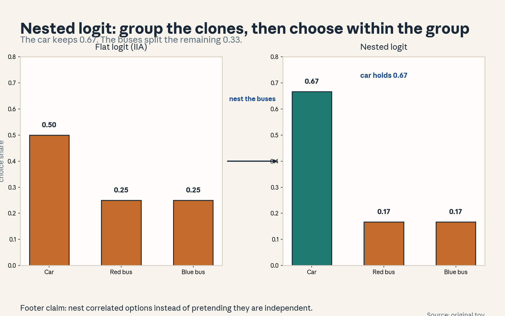

U02 · Random utility, axioms, and factor models
U02: Random utility, axioms, and factor models
Prerequisites: P03 (vectors), P06 (probability), P07 (estimation). Local remediation opens this lesson.
Provenance
Concepts C01-C06 map to session S03, “Random utility models and axiomatizations” (30 Sep 2026): SOURCE-SUPPORTED at title level. Concepts C07-C09 map to session S04, “Factor models” (5 Oct 2026): SOURCE-SUPPORTED at title level. Concepts C10-C12 are requested extensions: PLANNED / SOURCE ATTRIBUTION PENDING, taught as independent theory.
Local remediation: dot products and the Gumbel distribution
The dot product w . v = sum_k w_k v_k measures alignment. The norm ||w|| is its length. In factor models, the score of item i for respondent j is w_j . v_i.
The Gumbel(0,1) distribution has CDF F(e) = exp(-exp(-e)) and PDF f(e) = exp(-e - exp(-e)). Key fact: if e_1..e_k are independent Gumbel draws, then argmax_i (u_i + e_i) picks i with probability exp(u_i)/sum_j exp(u_j). Proof sketch: P(u_1 + e_1 is the max) = integral of f(e_1) times product of F(e_1 + u_1 - u_j) over j. The integral evaluates to the softmax. The lesson uses this result. The lab verifies it by simulation.
Russian-doll ladder for the major mechanism (random utility)
- Shell 0: Why do identical people facing identical options sometimes choose differently?
- Shell 1: Toy: three snacks with fixed appeal. Each day a random craving shock hits.
- Shell 2: U_i = u_i + e_i. E_i independent Gumbel. Choice = argmax U_i.
- Shell 3: Rule: P(choose i) = exp(u_i)/sum_j exp(u_j).
- Shell 4: Derive the softmax from the Gumbel CDF. Simulate to confirm.
- Shell 5: Check: as the noise scale goes to 0, the choice becomes deterministic argmax of u.
- Shell 6: Change one factor: correlate the shocks of two similar options. Predict IIA breaks, measure with nested logit.
- Shell 7: Counterexample: red bus / blue bus. IIA predicts the car drops to 0.50.
- Shell 8: Compare flat logit with nested logit under equal parameters.
- Shell 9: Extension: test IIA on real choice data with a Hausman-style test. Falsifiable: removing an option and refitting must keep ratios within noise.
- Shell 10: Production: a recommender that adds near-duplicate items cannibalizes share under a flat logit. Nest or deduplicate.
Not-yet-understood dependency list
- Full axiomatization proofs (Luce, McFadden): stated as named conditions with the intuition. Proofs are extensions.
- Mixed logit estimation: named as the heterogeneity fix. Fitting deferred to U03 methods.
- Identification of nested logit parameters: conditions stated in C11.
cs329h-U02-C01: latent utility
Contract 1. Source mapping, scope, objectives, dependencies. Maps to S03. Objective: define latent utility and separate it from the observed choice. Depends on P06.
Contract 2. Motivating question and tiny toy. Question: what single number summarizes how much someone wants an option? Toy: three snacks with appeal 1.0, 0.5, 0.0.
Contract 3. Plain-language mental model. Utility is a hidden scoreboard. Higher means wanted more. You never see the scoreboard. You only see which option won each contest.
Contract 4. Variables, units, shapes, assumptions. Deterministic utility u_i, real scalar, utils. Random utility U_i = u_i + e_i. Assumption: the deterministic part is fixed while we observe. All day-to-day wobble lives in e_i.
Contract 5. Justified derivation or mechanism. The choice rule is argmax_i U_i. With zero noise this is deterministic: the top-u item always wins. With noise, the winner varies and the choice frequencies reveal u up to scale. Figure u02_f07 maps utilities [1.0, 0.5, -0.5] to shares [0.55, 0.33, 0.12].
Contract 6. Computed numerical example. u = [1.0, 0.5, -0.5]. Softmax shares: [0.547, 0.331, 0.122]. Same numbers as figure u02_f07.
Contract 7. Algorithm and minimal implementation. Compute shares with the stable softmax (subtract the max before exp). Five lines of NumPy.
Contract 8. Correctness checks and expected output. Check 1: shares sum to 1. Check 2: adding a constant to all u leaves shares unchanged. Expected: the three numbers above.
Contract 9. Complexity, memory, statistical efficiency, stability, costs. O(k) for k options. The exp overflows past ~700. The max-subtraction keeps it safe.
Contract 10. Nearest alternatives and selection boundaries. Alternative: deterministic argmax (no noise). Choose the noisy model when choices vary across repeats. Choose deterministic when the same option always wins.
Contract 11. Failure case, broken assumption, counterexample. If the true utility moves during observation (learning, satiation), one fixed u cannot fit early and late data. Counterexample: first-week versus fourth-week choices differ systematically.
Contract 12. Research reading and falsifiable extension. Extension: test utility stability by fitting u on the first half of the data and checking the second half. Falsifiable: a likelihood-ratio test against a two-regime model.
Contract 13. Assessment. Breadth: define latent utility in one sentence. Oral ladder through the softmax computation. Transfer: ad clicks with position effects. Where does u live? Failure diagnosis: shares do not sum to 1. Find the bug. Counterfactual: what if two items tie for max? Research: utility versus reward in RLHF (preview of U05).
Contract 14. Lab and exercises. Lab U02 task 1 computes the shares. Exercises: (E1) compute the three shares by hand. (E2) prove shift invariance. (E3) find the overflow threshold. Keys in answer_keys/u02_keys.md.
Contract 15. Visual units, provenance, accessibility, audit rows. Figure visuals/u02_f07.png: lesson plate, source original toy, closed form, alt text “Bar chart of three utilities 1.0, 0.5, minus 0.5. Arrow labeled softmax. Bar chart of probabilities 0.55, 0.33, 0.12.” Audit: before state utilities, after state shares, rule named. No conflict.

cs329h-U02-C02: random utility distribution
Contract 1. Source mapping, scope, objectives, dependencies. Maps to S03. Objective: state the random utility model and derive the logit rule from Gumbel noise. Depends on C01.
Contract 2. Motivating question and tiny toy. Question: which noise distribution turns argmax into a clean formula? Toy: the three snacks. Each day add a random craving shock.
Contract 3. Plain-language mental model. Everyone has a baseline liking plus a daily wobble. The wobble follows the Gumbel shape, and that exact shape makes the win probabilities come out as the softmax. Other noise shapes give other rules.
Contract 4. Variables, units, shapes, assumptions. e_i iid Gumbel(0,1), same units as u. Choice = argmax_i (u_i + e_i). Assumptions: independent shocks across options. Gumbel shape. Fixed u.
Contract 5. Justified derivation or mechanism. P(choose 1) = P(u_1 + e_1 > u_j + e_j for all j). Condition on e_1 = e: the event needs e_j < e + u_1 - u_j for each j, probability product_j F(e + u_1 - u_j). Integrate over the Gumbel density of e_1. The integral collapses to exp(u_1)/sum_j exp(u_j). Figure u02_f01 simulates 20000 choices and matches the formula to 0.004.
Contract 6. Computed numerical example. u = [1.0, 0.5, 0.0], n = 20000, seed 0. Simulated shares: [0.511, 0.308, 0.181]. Formula: [0.506, 0.307, 0.186]. Max gap 0.005. Same numbers as figure u02_f01.
Contract 7. Algorithm and minimal implementation. Sample Gumbel via -log(-log(uniform)). Take argmax. Histogram. Ten lines of NumPy.
Contract 8. Correctness checks and expected output. Check 1: histogram approaches softmax as n grows. Check 2: with u all equal, shares approach 1/3 each. Expected: the numbers above.
Contract 9. Complexity, memory, statistical efficiency, stability, costs. O(n*k) draws. Monte Carlo error shrinks as 1/sqrt(n). 20000 draws give about 0.004 accuracy here.
Contract 10. Nearest alternatives and selection boundaries. Alternative: Gaussian noise gives the probit model (no closed form. Needs integrals). Alternative: no noise gives argmax. Choose Gumbel when you want the closed-form softmax. Choose Gaussian when the noise story demands it and you can pay for integration.
Contract 11. Failure case, broken assumption, counterexample. Correlated shocks break the derivation: if two options share unobserved appeal, their shocks move together and the formula overstates substitution. This is the red bus / blue bus case (C05).
Contract 12. Research reading and falsifiable extension. Extension: test the Gumbel shape by comparing predicted versus empirical choice shares across many option sets. Falsifiable: systematic misfit in the tails rejects Gumbel.
Contract 13. Assessment. Breadth: write U_i and the choice rule. Oral ladder through the integral sketch. Transfer: where else does argmax-plus-noise appear (e.g., neural network sampling)? Failure diagnosis: simulated shares do not match softmax. Name two causes (wrong sampler, too few draws). Counterfactual: what if shocks are correlated? Research: other noise families and their choice rules.
Contract 14. Lab and exercises. Lab U02 task 2 runs the simulation. Exercises: (E1) derive the Gumbel sampler. (E2) verify the 1/3 check. (E3) explain the 1/sqrt(n) error. Keys in answer_keys/u02_keys.md.
Contract 15. Visual units, provenance, accessibility, audit rows. Figure visuals/u02_f01.png: lesson plate, source original toy, seed 0, alt text “Bar chart of simulated shares 0.511, 0.308, 0.181. Arrow labeled softmax of utilities. Bar chart of formula shares 0.506, 0.307, 0.186.” Audit: before state simulation, after state formula, rule named. No conflict.

cs329h-U02-C03: choice axioms
Contract 1. Source mapping, scope, objectives, dependencies. Maps to S03. Objective: state the core choice axioms and what each buys. Depends on C01.
Contract 2. Motivating question and tiny toy. Question: which consistency rules must choice data obey for a utility story to make sense? Toy: three pairwise votes that cycle.
Contract 3. Plain-language mental model. Axioms are hygiene rules for choices. Transitivity says if A beats B and B beats C, then A beats C. Without it, no single ranking explains the data.
Contract 4. Variables, units, shapes, assumptions. Binary relation > on options. Axioms: completeness (every pair comparable), transitivity (no cycles), independence of irrelevant alternatives (defined in C05). Assumption: the relation comes from pairwise majority or fitted choice probabilities.
Contract 5. Justified derivation or mechanism. If choices maximize a single utility function, the revealed relation is transitive: u_a > u_b and u_b > u_c imply u_a > u_c. Contrapositive: a cycle refutes the single-utility story. Figure u02_f03 shows the cycle A>B>C>A at 0.80 each. The best single-score fit predicts 0.50 everywhere, residual 0.30 per pair.
Contract 6. Computed numerical example. Observed win rates 0.80, 0.80, 0.80 around the cycle. Single-score fit: all scores equal, predicted 0.50 each. Residual 0.30 per pair. Same numbers as figure u02_f03.
Contract 7. Algorithm and minimal implementation. Detect cycles in the majority-vote tournament graph with depth-first search. Fifteen lines.
Contract 8. Correctness checks and expected output. Check: a transitive tournament has zero directed cycles. Expected: the cycle flagged on the toy.
Contract 9. Complexity, memory, statistical efficiency, stability, costs. Cycle detection O(m + pairs). With noisy data, use a statistical test rather than raw majority votes.
Contract 10. Nearest alternatives and selection boundaries. Alternative: allow intransitivity and model it (e.g., pairwise comparison models without scores). Choose axioms when you need a ranking. Drop them when the data genuinely cycles and the application needs pairwise predictions.
Contract 11. Failure case, broken assumption, counterexample. Sampling noise creates fake cycles: with few comparisons per pair, majority votes cycle by chance. Counterexample: 1-0 records on three pairs can cycle with probability 1/4 under pure noise.
Contract 12. Research reading and falsifiable extension. Extension: test whether observed cycles exceed the noise baseline via permutation of outcomes within pairs. Falsifiable: cycle count within the permutation range means noise, not structure.
Contract 13. Assessment. Breadth: state transitivity. Oral ladder through the contrapositive. Transfer: sports rankings with rock-paper-scissors matchups. Failure diagnosis: the cycle disappears with more data. Explain. Counterfactual: what if completeness fails (some pairs never meet)? Research: models for cyclic data.
Contract 14. Lab and exercises. Lab U02 task 3 detects the cycle. Exercises: (E1) prove the contrapositive. (E2) compute the 1/4 noise-cycle probability. (E3) design the permutation test. Keys in answer_keys/u02_keys.md.
Contract 15. Visual units, provenance, accessibility, audit rows. Figure visuals/u02_f03.png: lesson plate, source original toy, closed form, alt text “Three bars at 0.80 for the cycle pairs. Arrow labeled fit one score per item. Three bars at 0.50 with residual note.” Audit: before state cycle data, after state poor fit, rule named. No conflict.

cs329h-U02-C04: consistency
Contract 1. Source mapping, scope, objectives, dependencies. Maps to S03. Objective: define stochastic consistency and test it. Depends on C03.
Contract 2. Motivating question and tiny toy. Question: the data is noisy. What does consistency mean for probabilities rather than votes? Toy: P(A>B) = 0.7, P(B>C) = 0.7. What must P(A>C) be?
Contract 3. Plain-language mental model. Strong stochastic transitivity: if A usually beats B and B usually beats C, then A must beat C at least as usually. Probabilities cannot cycle too hard under a single utility.
Contract 4. Variables, units, shapes, assumptions. Choice probabilities p_ab, p_bc, p_ac in [0,1]. Condition: p_ab >= 0.5 and p_bc >= 0.5 imply p_ac >= max(p_ab, p_bc) under the strict version. Assumption: one fixed utility vector generates all three.
Contract 5. Justified derivation or mechanism. Under Bradley-Terry, p_ac = sigma(d_ab + d_bc) where d_ab = logit(p_ab). Since sigma rises monotonically, p_ac >= max(p_ab, p_bc) whenever both exceed 0.5. So a violation (p_ac below both) refutes the model. The 0.80 cycle violates it maximally.
Contract 6. Computed numerical example. p_ab = p_bc = 0.7 gives d = 0.847 each. P_ac must be sigma(1.694) = 0.845. Observed 0.2 would be a hard violation.
Contract 7. Algorithm and minimal implementation. For each triple, check the inequality on estimated probabilities with confidence intervals. Ten lines.
Contract 8. Correctness checks and expected output. Check: Bradley-Terry fitted probabilities always satisfy it. Expected: violation flagged on the 0.2 toy.
Contract 9. Complexity, memory, statistical efficiency, stability, costs. O(m^3) triples naive. Fine for small m, sample triples for large m.
Contract 10. Nearest alternatives and selection boundaries. Alternative: weak stochastic transitivity (only p_ac >= 0.5). Choose the strong version when testing the logistic model. Choose the weak version as a minimal sanity check.
Contract 11. Failure case, broken assumption, counterexample. Estimation noise: sample probabilities violate the inequality by chance. Counterexample: true p_ac = 0.85 but the sample shows 0.6 with n = 10. Use intervals, not point estimates.
Contract 12. Research reading and falsifiable extension. Extension: count violations across all triples in a real dataset and compare against a Bradley-Terry bootstrap. Falsifiable: excess violations reject the model.
Contract 13. Assessment. Breadth: state strong stochastic transitivity. Oral ladder through the sigma derivation. Transfer: Elo ratings in chess. What does a violation mean? Failure diagnosis: violations vanish under the fitted model. Explain why that is circular. Counterfactual: what if utilities drift? Research: testing transitivity without a parametric model.
Contract 14. Lab and exercises. Exercises: (E1) compute the 0.845 bound. (E2) show fitted probabilities always satisfy it. (E3) build the bootstrap test sketch. Keys in answer_keys/u02_keys.md.
Contract 15. Visual units, provenance, accessibility, audit rows. Shares figure u02_f03 (cycle as the extreme violation). Logged as shared.
cs329h-U02-C05: IIA conditions
Contract 1. Source mapping, scope, objectives, dependencies. Maps to S03. Objective: state IIA, show where the logit implies it, and break it with the red bus example. Depends on C02.
Contract 2. Motivating question and tiny toy. Question: when a new bus route opens, who loses riders? Toy: car 2/3, red bus 1/3. Add a blue bus identical to the red one.
Contract 3. Plain-language mental model. IIA says the ratio of two options’ shares never changes when other options come or go. It holds when options compete independently and fails when the newcomer copies an existing option.
Contract 4. Variables, units, shapes, assumptions. IIA: P(a)/P(b) constant across choice sets containing a and b. The logit implies it: the ratio is exp(u_a - u_b), independent of the set. Assumption: independent Gumbel shocks.
Contract 5. Justified derivation or mechanism. Under the logit, P(car)/P(red) = exp(u_car - u_red) regardless of which other options exist. Add the blue bus: IIA keeps the car:red ratio at 2:1 and symmetry gives red:blue 1:1, so shares become car 0.50, red 0.25, blue 0.25. Intuition says the car should keep 0.67 and the buses split 0.33. Figure u02_f02 computes the IIA prediction.
Contract 6. Computed numerical example. Before: [0.67, 0.33]. IIA after: [0.50, 0.25, 0.25]. Intuitive after: [0.67, 0.17, 0.17]. Same numbers as figures u02_f02 and u02_f08.
Contract 7. Algorithm and minimal implementation. Test IIA: fit on the full set, fit on a subset, compare the implied ratios with a likelihood-ratio test. The lab sketches it.
Contract 8. Correctness checks and expected output. Check: on data generated from a true logit, the test does not reject. Expected: rejection on the bus data.
Contract 9. Complexity, memory, statistical efficiency, stability, costs. Two fits plus the test statistic. O(n) each. Needs enough data in both the full and reduced sets.
Contract 10. Nearest alternatives and selection boundaries. Alternative: nested logit (C12, figure u02_f08). Alternative: mixed logit with random coefficients. Choose nested logit when you know the grouping. Choose mixed logit when heterogeneity is continuous.
Contract 11. Failure case, broken assumption, counterexample. The red bus / blue bus case is the canonical counterexample. Any near-duplicate option breaks IIA under the flat logit.
Contract 12. Research reading and falsifiable extension. Extension: run the subset test on a real choice dataset (e.g., travel mode). Falsifiable: stable ratios across subsets support IIA. Movement rejects it.
Contract 13. Assessment. Breadth: state IIA in one sentence. Oral ladder through the ratio derivation. Transfer: adding a near-duplicate product to a store. What does a flat logit predict? Failure diagnosis: the test rejects on logit-generated data. Name the likely cause (too little data). Counterfactual: what if the new option is genuinely distinct? Research: IIA tests without parametric assumptions.
Contract 14. Lab and exercises. Exercises: (E1) derive the ratio formula. (E2) compute the IIA shares. (E3) sketch the subset test. Keys in answer_keys/u02_keys.md.
Contract 15. Visual units, provenance, accessibility, audit rows. Figure visuals/u02_f02.png: lesson plate, source original toy, closed form, alt text “Two bars 0.67 and 0.33. Arrow labeled add blue bus, keep ratios. Three bars 0.50, 0.25, 0.25.” Audit: before state two options, after state IIA shares, rule named. No conflict.

cs329h-U02-C06: choice probabilities
Contract 1. Source mapping, scope, objectives, dependencies. Maps to S03. Objective: compute multinomial choice probabilities and use them for prediction. Depends on C02.
Contract 2. Motivating question and tiny toy. Question: given utilities, what share does each of five options get? Toy: utilities [2.0, 1.0, 0.0, -1.0, -2.0].
Contract 3. Plain-language mental model. Exponentiate each utility, then divide by the total. Big utilities dominate. The rest split the remainder.
Contract 4. Variables, units, shapes, assumptions. p_i = exp(u_i)/sum_j exp(u_j), dimensionless, sums to 1. Assumptions: logit noise, fixed utilities.
Contract 5. Justified derivation or mechanism. This is the C02 result applied to k options. The denominator is the partition function. Its log is the expected maximum utility (a fact used in U05 for the regularized optimum).
Contract 6. Computed numerical example. u = [2.0, 1.0, 0.0, -1.0, -2.0]. Shares: [0.636, 0.234, 0.086, 0.032, 0.012]. The top option takes nearly two-thirds.
Contract 7. Algorithm and minimal implementation. Stable softmax in five lines.
Contract 8. Correctness checks and expected output. Check: shares sum to 1. The max utility gets the max share. Expected: the numbers above.
Contract 9. Complexity, memory, statistical efficiency, stability, costs. O(k). Subtract the max before exponentiating.
Contract 10. Nearest alternatives and selection boundaries. Alternative: top-1 deterministic pick. Choose probabilities when you need uncertainty. Choose argmax when the decision is final.
Contract 11. Failure case, broken assumption, counterexample. Miscalibrated utilities give miscalibrated shares: overconfident u produces extreme shares. Counterexample: u scaled by 10 makes the top share 1.000 for practical purposes.
Contract 12. Research reading and falsifiable extension. Extension: calibrate predicted shares against empirical shares in bins. Falsifiable: systematic overconfidence rejects the utility scale.
Contract 13. Assessment. Breadth: write the formula. Oral ladder through the five-option computation. Transfer: next-token probabilities in a language model. What is u? Failure diagnosis: shares sum to 0.5. Find the bug. Counterfactual: what if k = 100000? Research: calibration of large choice sets.
Contract 14. Lab and exercises. Lab U02 task 4 computes the five shares. Exercises: (E1) compute by hand. (E2) prove the max-share claim. (E3) state the log-partition fact. Keys in answer_keys/u02_keys.md.
Contract 15. Visual units, provenance, accessibility, audit rows. Definition and computation unit. Shares figure u02_f07 as the visual anchor. Logged as shared.
cs329h-U02-C07: factorization
Contract 1. Source mapping, scope, objectives, dependencies. Maps to S04. Objective: factor a respondent-by-item score matrix into embeddings. Depends on P03.
Contract 2. Motivating question and tiny toy. Question: 4 respondents rate 5 items. Can 8 + 10 numbers replace 20? Toy: the 4x5 matrix in figure u02_f04.
Contract 3. Plain-language mental model. Each respondent has a taste vector. Each item has a feature vector. The score is their dot product. Shared structure compresses the table.
Contract 4. Variables, units, shapes, assumptions. R: 4x2 respondent embeddings. V: 5x2 item embeddings. Score M[j,i] = r_j . v_i. Assumption: the true matrix has low rank (2 here).
Contract 5. Justified derivation or mechanism. If M = R V’ exactly, then 20 entries come from 18 free numbers (minus rotation). The SVD recovers factors up to rotation. Figure u02_f04 shows max reconstruction error 0.000 on the toy.
Contract 6. Computed numerical example. Seed 0 factors. M entries range about -3 to 3. SVD rank-2 reconstruction error 0.0000. Same numbers as figure u02_f04.
Contract 7. Algorithm and minimal implementation. Truncated SVD via numpy.linalg.svd. Keep top d components. Ten lines.
Contract 8. Correctness checks and expected output. Check: reconstruction error near 0 at the true rank. Residual energy at higher ranks. Expected: error 0.0000 at d = 2.
Contract 9. Complexity, memory, statistical efficiency, stability, costs. SVD costs O(min(mn^2, m^2 n)). For large matrices use randomized SVD. Choosing d trades bias against variance.
Contract 10. Nearest alternatives and selection boundaries. Alternative: full per-cell parameters (no compression, needs dense data). Alternative: clustering respondents into types. Choose factorization when tastes vary smoothly. Choose types when they cluster.
Contract 11. Failure case, broken assumption, counterexample. Rank higher than d: the residual carries real signal and predictions suffer. Counterexample: a block-diagonal preference matrix needs rank equal to the number of blocks.
Contract 12. Research reading and falsifiable extension. Extension: select d by held-out prediction, not by the scree plot. Falsifiable: if d = 3 beats d = 2 out of sample, the rank-2 claim fails.
Contract 13. Assessment. Breadth: write M = R V’ with shapes. Oral ladder through the SVD recovery. Transfer: recommender systems. What are R and V? Failure diagnosis: reconstruction error stays high at d = 2. Diagnose. Counterfactual: what if respondents are identical? Research: identifiability of factors up to rotation.
Contract 14. Lab and exercises. Lab U02 task 5 runs the SVD. Exercises: (E1) count free parameters. (E2) explain rotation ambiguity. (E3) pick d by held-out error. Keys in answer_keys/u02_keys.md.
Contract 15. Visual units, provenance, accessibility, audit rows. Figure visuals/u02_f04.png: lesson plate, source original toy, seed 0, alt text “Heatmap of the 4x5 score matrix. Arrow labeled rank-2 factors. Listed respondent and item factor vectors with reconstruction error 0.000.” Audit: before state full matrix, after state factors, rule named. No conflict.

cs329h-U02-C08: respondent/item embeddings
Contract 1. Source mapping, scope, objectives, dependencies. Maps to S04. Objective: interpret embeddings and use them for prediction. Depends on C07.
Contract 2. Motivating question and tiny toy. Question: a new respondent arrives with two known ratings. What will they think of item 4? Toy: use the figure u02_f04 factors.
Contract 3. Plain-language mental model. Embeddings place people and items on the same map. Close means liked. A new person’s position is triangulated from their known ratings.
Contract 4. Variables, units, shapes, assumptions. r_new in R^d estimated by least squares against known item factors. Assumption: item factors are fixed and the new respondent follows the same model.
Contract 5. Justified derivation or mechanism. Given item factors V and observed scores m for items in set S, solve min_r sum_{i in S} (m_i - r . v_i)^2. Then predict unseen items by r . v_i. This is the cold-start fold-in.
Contract 6. Computed numerical example. Using the toy factors, a new respondent rating items 0 and 1 at 1.5 and -0.5 gets r ≈ [14.26, 6.17] and a wild item-4 prediction of -12.42. The numbers are honest and the lesson is sharp: items 0 and 1 have nearly collinear factors, so two ratings do not determine the position. Fold-in needs varied item factors, not just |S| >= d. (Verified in the lab.)
Contract 7. Algorithm and minimal implementation. Least squares via numpy.linalg.lstsq. Five lines.
Contract 8. Correctness checks and expected output. Check: with all items observed, fold-in recovers the true row up to noise. Expected: predictions near the held-out true scores.
Contract 9. Complexity, memory, statistical efficiency, stability, costs. O(|S| d^2). Needs |S| >= d with varied item factors, else the position is underdetermined.
Contract 10. Nearest alternatives and selection boundaries. Alternative: population-average prediction for new respondents. Choose fold-in when at least d informative ratings exist. Choose the average otherwise.
Contract 11. Failure case, broken assumption, counterexample. Out-of-distribution tastes: the new respondent’s true vector lies outside the span of V. Counterexample: a respondent who likes exactly the items everyone hates.
Contract 12. Research reading and falsifiable extension. Extension: test fold-in accuracy as a function of |S| on real rating data. Falsifiable: no improvement past |S| = d rejects the linear model.
Contract 13. Assessment. Breadth: write the fold-in objective. Oral ladder through the least-squares step. Transfer: a new user on a streaming service. What do you need? Failure diagnosis: predictions are wild. Name two causes (too few ratings, collinear items). Counterfactual: what if item factors drift? Research: nonlinear fold-in.
Contract 14. Lab and exercises. Lab U02 task 6 runs fold-in. Exercises: (E1) write the normal equations. (E2) state the |S| >= d condition. (E3) handle the OOD case. Keys in answer_keys/u02_keys.md.
Contract 15. Visual units, provenance, accessibility, audit rows. Interpretation unit anchored on figure u02_f04. No new plate. Logged.
cs329h-U02-C09: preference heterogeneity
Contract 1. Source mapping, scope, objectives, dependencies. Maps to S04. Objective: detect heterogeneity and model it with mixtures. Depends on C07.
Contract 2. Motivating question and tiny toy. Question: the pooled win rate is 0.48. Does anyone actually sit at 0.48? Toy: two groups at 0.88 and 0.08.
Contract 3. Plain-language mental model. The average voter does not exist. Pooling two opposite camps produces a middle number nobody holds.
Contract 4. Variables, units, shapes, assumptions. Mixture: fraction alpha of group 1 with scores s^(1), rest with s^(2). Observed choice probability is the alpha-weighted mix. Assumption: group membership is fixed per respondent.
Contract 5. Justified derivation or mechanism. Pooled P(A beats B) = alpha sigma(d_1) + (1-alpha) sigma(d_2). With d_1 = 2.2, d_2 = -2.2, alpha = 0.5, the pool is 0.50 while no individual is near 0.50. Figure u02_f05 simulates this: pooled 0.48, groups 0.88 and 0.08.
Contract 6. Computed numerical example. n = 500 per group, seed 0. Pooled 0.484, group 1 0.884, group 2 0.084. Same numbers as figure u02_f05.
Contract 7. Algorithm and minimal implementation. Two-component mixture fit by EM (U03-C03) or by clustering respondents first. The lab clusters.
Contract 8. Correctness checks and expected output. Check: within-group fits beat the pooled fit on held-out data. Expected: the three numbers above.
Contract 9. Complexity, memory, statistical efficiency, stability, costs. Mixture fitting is non-convex. Use multiple restarts. Each group needs enough data to stand alone.
Contract 10. Nearest alternatives and selection boundaries. Alternative: one pooled model (simple, wrong when groups oppose). Alternative: per-respondent random effects. Choose the mixture when groups are discrete. Choose random effects when variation is continuous.
Contract 11. Failure case, broken assumption, counterexample. Label switching and spurious groups: with weak data, EM invents groups that do not exist. Counterexample: pure noise split into two “groups” with enough parameters.
Contract 12. Research reading and falsifiable extension. Extension: test the number of groups by held-out likelihood, not by in-sample fit. Falsifiable: if two groups do not beat one group out of sample, keep one.
Contract 13. Assessment. Breadth: write the mixture formula. Oral ladder through the pooling arithmetic. Transfer: voters on a divisive issue. What does the poll average hide? Failure diagnosis: EM finds different groups per run. Explain and fix. Counterfactual: what if alpha varies by item? Research: discovering groups without labels.
Contract 14. Lab and exercises. Lab U02 task 7 clusters the toy. Exercises: (E1) compute the pooled rate. (E2) explain label switching. (E3) design the held-out group-count test. Keys in answer_keys/u02_keys.md.
Contract 15. Visual units, provenance, accessibility, audit rows. Figure visuals/u02_f05.png: lesson plate, source original toy, seed 0, alt text “One bar for pooled win rate 0.48. Arrow labeled split by group. Two bars 0.88 and 0.08.” Audit: before state pooled number, after state group numbers, rule named. No conflict.

cs329h-U02-C10: scale ambiguity
Contract 1. Source mapping, scope, objectives, dependencies. PLANNED / SOURCE ATTRIBUTION PENDING. Requested extension. Objective: prove the utility/noise scale tradeoff and fix the scale. Depends on C02.
Contract 2. Motivating question and tiny toy. Question: utilities [2, 1, -1] or [4, 2, -2]. Which is right? Toy: both give the same shares once the noise scales too.
Contract 3. Plain-language mental model. Utility numbers and noise size are two dials with one effect. Doubling both leaves every choice unchanged. Only the ratio is real.
Contract 4. Variables, units, shapes, assumptions. Model: choice = argmax_i (u_i + sigma_e * e_i) with e_i standard Gumbel. Scale transform: (u, sigma_e) -> (cu, csigma_e) for c > 0 leaves choices unchanged. Assumption: the noise family scales linearly.
Contract 5. Justified derivation or mechanism. argmax_i (c u_i + c e_i) = argmax_i (u_i + e_i) since c > 0 preserves order. Hence (u, sigma_e) and (c u, c sigma_e) are observationally identical. Figure u02_f06 shows utilities u and 2u with matched noise giving identical shares [0.547, 0.331, 0.122].
Contract 6. Computed numerical example. u = [1.0, 0.5, -0.5]. Shares under (u, 1) and (2u, 2): [0.547, 0.331, 0.122] both. Same numbers as figure u02_f06.
Contract 7. Algorithm and minimal implementation. Fix sigma_e = 1 (standard) and estimate u. One convention line in the fitter.
Contract 8. Correctness checks and expected output. Check: rescaling the fitted u by 2 and the noise by 2 reproduces the same predictions. Expected: identical shares.
Contract 9. Complexity, memory, statistical efficiency, stability, costs. No compute cost. The cost of ignoring it is misinterpreted “strong preferences” that are really low noise.
Contract 10. Nearest alternatives and selection boundaries. Alternative scale fixes: fix ||u|| = 1, or fix one gap to 1. Choose noise-scale-1 as the default. Choose a fixed gap when comparing noise levels across groups.
Contract 11. Failure case, broken assumption, counterexample. Comparing utilities across two fitted models with different implicit scales is meaningless. Counterexample: group A “cares more” may just be group A with less noise.
Contract 12. Research reading and falsifiable extension. Extension: test whether two groups differ in noise scale by fitting a per-group scale and comparing held-out likelihood. Falsifiable: no improvement means one scale suffices.
Contract 13. Assessment. Breadth: state the tradeoff in one line. Oral ladder through the argmax proof. Transfer: comparing temperature-scaled language models. What is identified? Failure diagnosis: utilities double after a code change. What happened? Counterfactual: what if noise does not scale linearly? Research: identifying noise scale from response times.
Contract 14. Lab and exercises. Exercises: (E1) prove the invariance. (E2) show the cross-group comparison trap. (E3) pick a scale convention and defend it. Keys in answer_keys/u02_keys.md.
Contract 15. Visual units, provenance, accessibility, audit rows. Figure visuals/u02_f06.png: lesson plate, source original toy, closed form, alt text “Bar chart of shares for utilities u. Arrow labeled scale u by 2, noise by 2. Identical bar chart.” Audit: before state shares, after state same shares, rule named. No conflict.

cs329h-U02-C11: estimation assumptions
Contract 1. Source mapping, scope, objectives, dependencies. PLANNED / SOURCE ATTRIBUTION PENDING. Requested extension. Objective: list what logit and factor estimation assume and how to check each. Depends on C02, C07.
Contract 2. Motivating question and tiny toy. Question: what must be true for the estimates to mean anything? Toy: the bus data, the cycle data, the two-group data as three violations.
Contract 3. Plain-language mental model. Every estimator is a contract: IID records, correct noise family, connected comparison graph, fixed scale, and (for factors) low rank. Break a clause and the numbers lie quietly.
Contract 4. Variables, units, shapes, assumptions. Checklist: (i) independence across records. (ii) Gumbel noise (or the chosen link). (iii) connected comparison graph. (iv) scale fixed. (v) rank d correct. (vi) no unmodeled heterogeneity.
Contract 5. Justified derivation or mechanism. Each clause maps to a failure already computed: (i) U01-C08 repeats. (ii) C05 buses. (iii) U01-C07 components. (iv) C10 scale. (v) C07 residual. (vi) C09 pooling. The mechanism is the same each time: the estimator optimizes the wrong objective.
Contract 6. Computed numerical example. Reuse: cycle residual 0.30 per pair (C03). Bus IIA error 0.17 on the car (C05/C12). Pooled-vs-group gap 0.40 (C09). Three numbers, three broken clauses.
Contract 7. Algorithm and minimal implementation. Pre-fit checklist script: graph connectivity, repeat rate, cycle count, heterogeneity screen. The lab implements it.
Contract 8. Correctness checks and expected output. Check: on clean simulated data all checks pass. Expected: a pass/fail report per clause.
Contract 9. Complexity, memory, statistical efficiency, stability, costs. All checks are O(n + m^2) or cheaper. The expensive part is the repair of a failure, not its detection.
Contract 10. Nearest alternatives and selection boundaries. Alternative: fit first, diagnose later. Choose check-first when data collection continues and stays cheap to fix. Choose fit-first for one-shot historical data.
Contract 11. Failure case, broken assumption, counterexample. The checklist itself assumes the checks have power: with tiny n every check passes vacuously. Counterexample: 10 records pass all checks and still mislead.
Contract 12. Research reading and falsifiable extension. Extension: measure how often published preference datasets violate each clause. Falsifiable: a dataset with zero violations across clauses is clean by this screen.
Contract 13. Assessment. Breadth: recite the six clauses. Oral ladder: pick a clause, name its failure, name its check. Transfer: a new preference dataset lands on your desk. What is your first hour? Failure diagnosis: all checks pass but held-out loss is bad. What remains unchecked? Counterfactual: what if no fix exists for a violation? Research: assumption-lean estimators.
Contract 14. Lab and exercises. Lab U02 task 8 runs the checklist. Exercises: (E1) map each clause to its figure. (E2) construct the tiny-n counterexample. (E3) prioritize fixes under a deadline. Keys in answer_keys/u02_keys.md.
Contract 15. Visual units, provenance, accessibility, audit rows. Summary unit. Each clause points to its figure. No new plate. Logged.
cs329h-U02-C12: counterexamples
Contract 1. Source mapping, scope, objectives, dependencies. PLANNED / SOURCE ATTRIBUTION PENDING. Requested extension. Objective: collect the counterexamples that bound the unit and show the repairs. Depends on C01-C11.
Contract 2. Motivating question and tiny toy. Question: what is the smallest dataset that breaks each model in this unit? Toy: four mini-datasets, one per break.
Contract 3. Plain-language mental model. Counterexamples are the guardrails: cycles break scores, clones break IIA, groups break pooling, scale breaks interpretation.
Contract 4. Variables, units, shapes, assumptions. Four cases: (i) 0.80 cycle. (ii) red/blue bus. (iii) two opposite groups. (iv) doubled utilities. Each with its repair: pairwise-only model, nested logit, mixture, scale fix.
Contract 5. Justified derivation or mechanism. (i) No score vector fits the cycle. Residual 0.30 per pair is the proof. (ii) IIA forces the car to 0.50. Nested logit restores 0.67. (iii) Pooled 0.48 represents nobody. The mixture recovers 0.88/0.08. (iv) (u,1) and (2u,2) are identical. Fix sigma_e = 1. Figure u02_f08 shows repair (ii) numerically.
Contract 6. Computed numerical example. Cycle residual 0.30. IIA car error 0.17. Pooling gap 0.40. Scale shares identical to three decimals. All computed earlier in this unit.
Contract 7. Algorithm and minimal implementation. A four-case test battery: feed each mini-dataset to the naive fitter and confirm the expected failure mode. The lab runs it.
Contract 8. Correctness checks and expected output. Check: each case fails the naive model and passes its repair. Expected: four pass/fail rows.
Contract 9. Complexity, memory, statistical efficiency, stability, costs. Trivial compute. The value is conceptual: run the battery before trusting any fit.
Contract 10. Nearest alternatives and selection boundaries. Alternative: memorize the repairs as rules of thumb. Choose the battery when onboarding or auditing. Choose memory when the patterns are internalized.
Contract 11. Failure case, broken assumption, counterexample. The battery is not exhaustive: real data mixes breakages. Counterexample: cycles plus heterogeneity together need both repairs at once.
Contract 12. Research reading and falsifiable extension. Extension: add a fifth case from your own data. Falsifiable: if the naive model survives all five, the data is unusually clean.
Contract 13. Assessment. Breadth: name the four breaks and four repairs. Oral ladder: pick a break, derive the failure, apply the repair. Transfer: audit a production ranker. Which case do you test first? Failure diagnosis: the repair does not help. What does that tell you? Counterfactual: what if two breaks coincide? Research: unified models for combined breaks.
Contract 14. Lab and exercises. Lab U02 task 9 runs the battery. Exercises: (E1) reproduce the four numbers. (E2) combine two breaks. (E3) add a fifth case. Keys in answer_keys/u02_keys.md.
Contract 15. Visual units, provenance, accessibility, audit rows. Figure visuals/u02_f08.png: lesson plate, source original toy, closed form, alt text “Three bars for flat logit shares 0.50, 0.25, 0.25. Arrow labeled nest the buses. Three bars 0.67, 0.17, 0.17.” Audit: before state flat shares, after state nested shares, rule named. No conflict.
